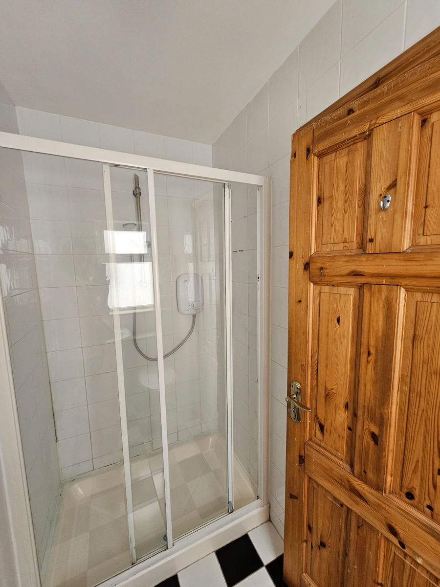

Doors & Trim 🚪
Install new skirting boards to match the flooring finishes.
Fit fresh architraves around doors for a neat, low-profile outline.
Finish with durable paint and lightly caulk joins for a seamless look.
Current Photos
Inspo Photos

Inspo Photos